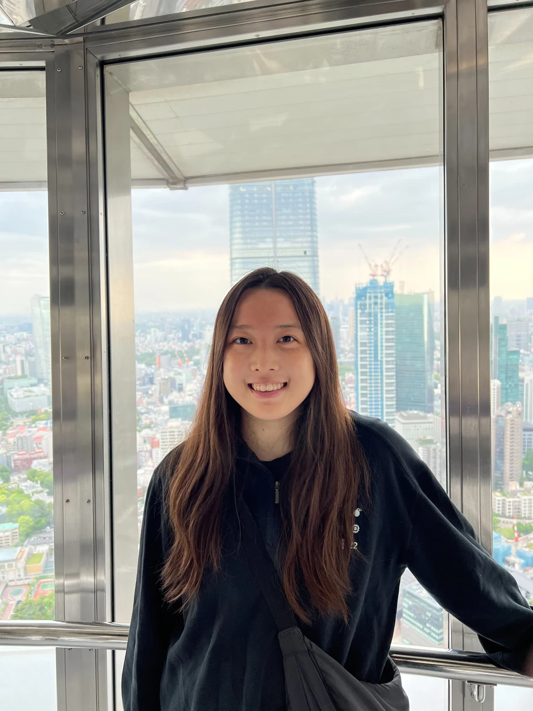
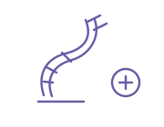
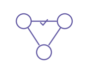

Words Before Pixels: Selective Modality Routing for Vision-Language Model Unlearning
Understanding how language and vision contribute to selective unlearning in vision-language models.
PhD student · UNC Chapel Hill
Building reliable
multimodal & agentic AI.
I’m a Computer Science PhD student in the UNITES Lab at the University of North Carolina at Chapel Hill, advised by Prof. Tianlong Chen.
I study how AI systems reason, connect evidence across modalities, and learn to be more reliable—with applications in scientific discovery.
Previously, I worked on agentic AI for biosurveillance at Lawrence Livermore National Laboratory and built multi-cloud networking infrastructure at Databricks. I received my B.S. in Computer Science from Carnegie Mellon, where I worked with Profs. Chenyan Xiong and Florian Metze.

Lately
Research Words Before Pixels at NeurIPS 2026, on selective modality routing for vision-language model unlearning.
Experience Spent the summer at Lawrence Livermore National Laboratory, working with Dr. Bhavya Kailkhura on agentic AI for scientific discovery.
Research Papers at RSS, ICLR, and ACL Findings: robot design, reasoning faithfulness, and multi-agent self-correction.
Teaching Received the John M. Glotzer Teaching Assistant Award at UNC.
Started my PhD in Computer Science at UNC Chapel Hill, advised by Prof. Tianlong Chen.
Recognized with the Operational Excellence Award and Teamwork Award at Databricks.
Graduated from Carnegie Mellon University with a B.S. in Computer Science and a minor in Language Technology.
Ideas into work
Multimodal models, reasoning, and agents that we can understand and trust. * Equal contribution.
Understanding how language and vision contribute to selective unlearning in vision-language models.


Detecting and correcting faulty steps before errors spread through a team of agents.
Generating audio from natural-language descriptions with latent diffusion.
Along the way
Research Assistant · UNITES Lab
Multimodal AI and multi-agent systems
Advisor: Prof. Tianlong Chen
Research Intern
Agentic scientific discovery for biosurveillance
Mentor: Dr. Bhavya Kailkhura
Software Engineer · Network Control Plane
Multi-cloud networking, serverless network billing, and infrastructure reliability.
Research Assistant · LTI & HCII
Multimodal retrieval, audio generation, video understanding, and CS education.
Previously: engineering internships at Databricks (2023) and Meta (2021, 2022).
Ph.D. in Computer Science
B.S. in Computer Science
Minor in Language Technology · GPA 3.88/4.0
Artificial IntelligenceUNC · Teaching Assistant · Spring 2026
Computer OrganizationUNC · Teaching Assistant · Fall 2025
Great Practical Ideas of CSCMU · Head Teaching Assistant · Fall 2021–2023
Introduction to Computer SystemsCMU · Teaching Assistant · Spring 2022
Recognition